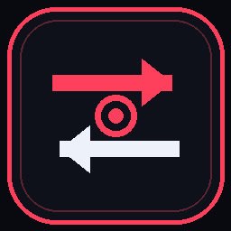

Windows PC
Windows 10 / 11 · x64 installerInstall LocalDrop on your PC, connect it to your router, then pair your Android phone by scanning the QR code.
—PC downloads

LOCAL NETWORK · PRIVATE SHARING
Move files. Share moments. Stay local. Connect your Android phone to your Windows PC with a QR scan and transfer files or chat directly over your local Wi-Fi network — no cloud storage required.
Official builds · Separate releases · Direct downloads
Install LocalDrop on your PC, connect it to your router, then pair your Android phone by scanning the QR code.
Scan the PC's pairing QR in the LocalDrop app. Approve Android's temporary Wi-Fi connection request to join your router.
Loading official GitHub download statistics…
Your devices communicate over your local network.
Send files between your Windows PC and Android phone with live progress and transfer speed.
Pair quickly with a one-time QR token. Android can request a temporary router Wi-Fi connection.
Keep messages and file sharing together in one connected workspace.
Three simple steps to start sharing.
Install the Windows app and enter your router's Wi-Fi name and password in its settings.
Start LocalDrop on the PC, then scan its QR code using Connect PC in the Android app.
Approve Android's Wi-Fi prompt and use the chat workspace to send files both ways.